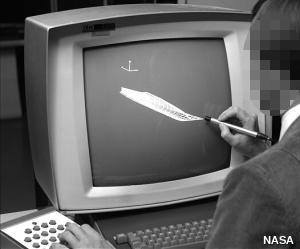
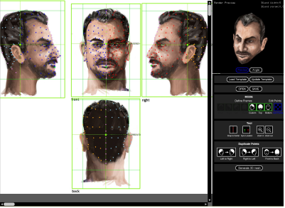
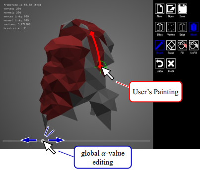
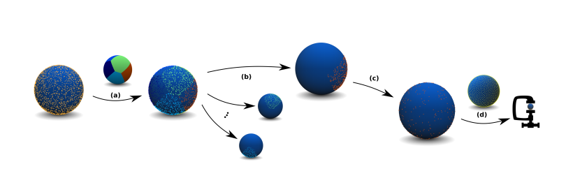
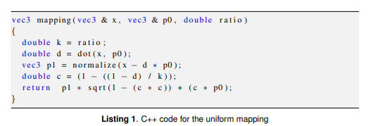
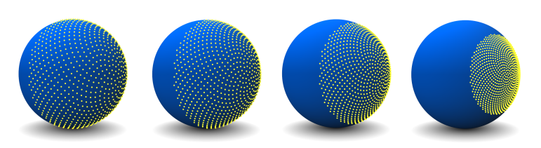
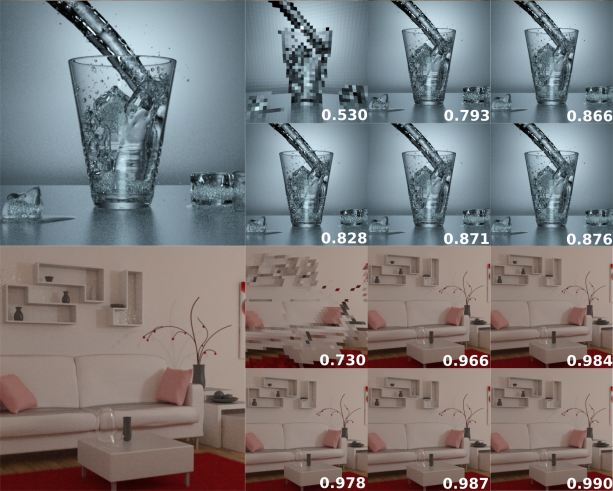

Abstract
In this report, the definition of Computer Graphics is clarified as well as the brief history. Furthermore, some
significant developments and latest innovations of Computer Graphics in Information Technology are listed out.
Through this report, readers will understand general knowledge about Computer Graphics and get update with
newest applications and goals of Computer Graphics in Information Technology.
The term computer graphics describes any use of computers to create and manipulate images. Computer graphics started with the play of data on hardcopy plotters and cathode ray tube (CRT) screens soon after the introduction of computers themselves. It has grown to include the creation, storage, and manipulation of models and images of objects. These models come from a diverse and expanding set of fields, and include physical, mathemati cal, engineering, architectural, and even conceptual (abstract) structures, natural phenome na, and so on. Computer graphics today is largely interactive: The user controls the contents, structure, and appearance of objects and of their displayed images by using input devices, such as a keyboard, mouse, or touch-sensitive panel on the screen. Because of the close relationship between the input devices and the display, the handling of such devices is included in the study of computer graphics.
Until the early 1980s, computer graphics was a small, specialized field, largely because the hardware was expensive and graphics-based application programs that were easy to use and cost-effective were few. Then, personal computers with built-in raster graphics displays—such as the Xerox Star and, later, the mass-produced, even less expensive Apple Macintosh and the IBM PC and its clones-popularized the use of bitmap graphics for user-computer interaction. A bitmap is a ones and zeros representation of the rectangular array of points (pixels or pels, short for picture elements") on the screen.
Once bitmap graphics became affordable, an explosion of easy-to-use and inexpensive graphics-based applications soon followed. Graphics-based user interfaces allowed millions of new users to control simple, low-cost application programs, such as spreadsheets, word processors, and drawing programs. The concept of a "desktop" now became a popular metaphor for organizing screen space.
By means of a window manager, the user could create, position, and resize rectangular screen areas, called windows, that acted as virtual graphics terminals, each running an application. This allowed users to switch among multiple activities just by pointing at the desired window, typically with the mouse. Like pieces of paper on a messy desk, windows could overlap arbitrarily. Also part of this desktop metaphor were displays of icons that represented not just data files and application programs, but also common office objects, such as file cabinets, mailboxes, printers, and trashcans, that performed the computer-operation equivalents of their real-life counterparts. Today, almost all interactive application programs, even those for manipulating text (e.g., word processors) or numerical data (e.g., spreadsheet programs), use graphics extensively in the user interface and for visualizing and manipulating the application-specific objects. Graphical interaction via raster displays (displays using bitmaps) has replaced most textual interaction with alphanumeric terminals.
The beginnings

A NASA scientist draws a graphic image on an IBM 2250 computer screen with a light pen. This was state-of-the-art technology in 1973! Photo by courtesy of NASA Ames Research Center (NASA-ARC).
Computer graphics for everyone
Three-dimensional modeling is a necessary and important step in the production pipelines of the animation and games
industry. Although some pioneering work has been done on scanning a real-world object and converting the scanned
data into a 3D mesh, the artist community has not yet established an efficient 3D modeling framework. The reason is
that the scanning system cannot generate non-existing objects such as hand-drawn characters, designed by 2D artists.
The traditional 3D modeling process consists of two steps: (i) drawing 2D model sheets, which are orthographic
sketched views (e.g., front, side, and top) of characters (or objects), and (ii) generating 3D points and connecting
them using a 3D modeling system. However, these 3D modeling systems can be especially difficult to use, even for
experienced artists, and require much time-consuming manual work. Here, our final goal is to establish an artistfriendly framework to make 3D meshes from 2D model sheets.
First, we implement a prototype tool to manually create 3D points from a 2D model sheet (see Figure 1). In this
system, the user marks 2D points (such as the character’s eyes, nose, or boundary/center position) on one orthographic
view, projects them back into the other views, and adjusts their positions to specify their 3D positions. Of course, this
manual pointing of 3D vertices on 2D images is technologically a trivial problem, but even users with no 3D modeling
experience can easily scan and generate 3D point sets one by one. Conversely, in order to make a 3D mesh from
3D point sets, a fully manual method such as connecting all 3D points on 2D design sheets might be very tedious.
Therefore, the present paper aims at reducing the manual effort to make 3D meshes from 3D points.
Although various algorithms have been proposed for constructing 3D meshes given 3D scanned point clouds, they
typically take one of two approaches. One approach is to compute an implicit representation, then later extract an
isosurface [Turkand O’Brien 2002; Ohtake et al 2003; Nealen 2004; Kazhdan et al 2006; Sharf et al 2006; Guennebaud
and Gross 2007; Ijiri et al 2013]. While these methods can be suitable for 3D scanned point clouds (dense point
sets) produced by the 3D scanning of existing objects, they are unsuitable for sparse and non-uniform point sets (for
example, point sets designed from 2D images by hand). The other approach is to triangulate the input point set
directly [Amenta et al 2001; Dey and Giesen 2001; Peethambaran and Muthuganapathy 2015; Methirumangalath et al
2017]. One such direct triangulation method involves alpha-shapes (α-shapes) [Edelsbrunner and Mucke 1994] and
is suitable for sparse point sets. However, one problem with alpha-shapes is that the user must specify appropriate
alpha-values (thresholds). This requires manual intervention and can be especially difficult when spatially varying
α-values are needed
Then, to make a 3D mesh from the user-defined point sets, we implement a novel meshing tool whereby the user simply
applies paint operations to the 3D points (see Figure 2). Our meshing tool allows users to interactively assign spatially
varying α-values to point sets and observe the intermediate results. Our principal contributions are summarized as
follows:

Figure 1. Our Prototype Tool
The user specifies the location and size of the 2D design (green) within the input sheet. From these images, the user selects points in one of the images as landmarks. After 2D landmark management, the system computes the 3D vertexes in a 3D preview (upper-right window).

Figure 2. Our Meshing Tool
The user adjusts the global α-value until part of the mesh ”looks good,” and then paints these polygons using our fill and brush tools. After painting, the system shows the 3D polygonal result (red hues) in a 3D preview.
We proposed an artist-friendly framework for facilitating the “manual” 3D modeling from 2D design sheets as follow: We have developed a prototype tool to fully manually create 3D points one by one from 2D images. We have also extended the α-shape method [Edelsbrunner and Mucke 1994] by introducing the novel concept of spatially varying α-values, stored as individual threshold values for each triangle, and implemented a novel meshing tool (i.e., brush and fill tools) inspired by existing painting software and an interactive segmentation method [Igarashi et al. 2016]. In particular, our meshing tool for manually creating 3D polygonal meshes from user defined point sets was highly appreciated by the participants in our user study who had experience using 3D modeling and drawing/painting software. Whereas the conventional 3D modeling process is very time-consuming for users, our framework can significantly reduce the effort required.
Sylvain Rousseau
Tamy Boubekeur
LTCI, Telecom Paris, Institut Polytechnique de Paris

Unit vectors shown here as their representative points on the surface of the unit sphere are (a) grouped, then, for each group (b), called a window, we apply a uniform mapping that (c) relocates subparts to the whole surface of the unit sphere. Finally, (d), the vectors can be compressed with an improved precision by using any existing unit vector quantization


Figure 4. Mapping applied to hemispherical Fibonacci point sets. From left to right: original point set, mapping with k = 0.75, 0.5, and 0.25.

Figure 5. Quantization impact. All images were rendered using 512 spp. For each scene presented in Figure 6 (left), the first row shows quantized rendering using octahedral quantization with 16, 24, and 32 bits per direction vector, and the second row shows quantized rendering using our new mapping strategy, with 213 groups and the CSF grouping, with the same bit budget. For each image we display its structural similarity (SSIM) to the non-quantized rendering output in the bottom-right corner. All quantized results are obtained by quantizing all the rays except the shadow rays.
We have presented a new on-the-fly quantization method for unorganized sets of unit vectors which, combined with state-of-the-art positional compression, can be used to compress rays in a distributed Monte Carlo rendering framework with lower error in the final image. The extra computational cost is small in comparison to classical quantization techniques and can be even reduced when used in a rendering engine that already sorts ray batches. In the future, our method could also be used to quantize other kinds of unit-vector data sets, such as of surfels or normal maps. We showed that quantized path tracing with a high enough bit count, although different from nonquantized rendering, is not necessarily further away from ground truth. However, the resulting noise has different statistical properties, and a study on how this can affect popular denoising techniques would be interesting.